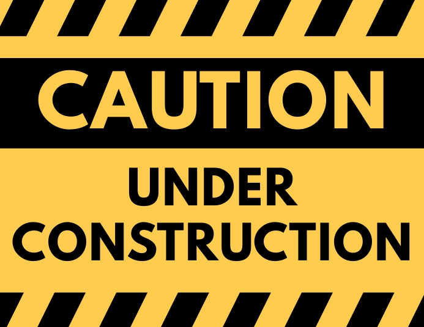

Mijn naam is Thibau Kerkhofs. Ik ben 21 jaar oud, geboren op 26 juni 2002. Ik ben een gemotiveerde student die graag wat meer kennis opdoet over verschillende aspecten van het coderen. Ik codeer graag in C# en ook in Javascript, maar ik sta zeker open om andere talen aan te leren en te implementeren.
Ik beheer de basis C#, Javascript, Python en SQL.
Ook ben ik zeer sociaal en kan ik goed in teamverband werken.
Ik beheer het Nederlands en het Engels zeer goed. Indien nodig zou ik me lichtjes kunnen behelpen in het Duits en Frans.